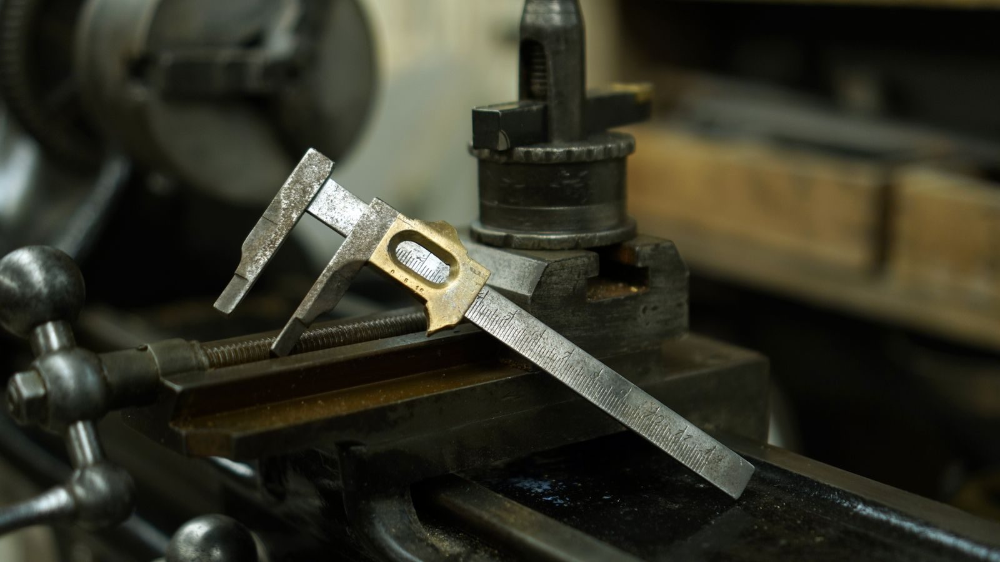
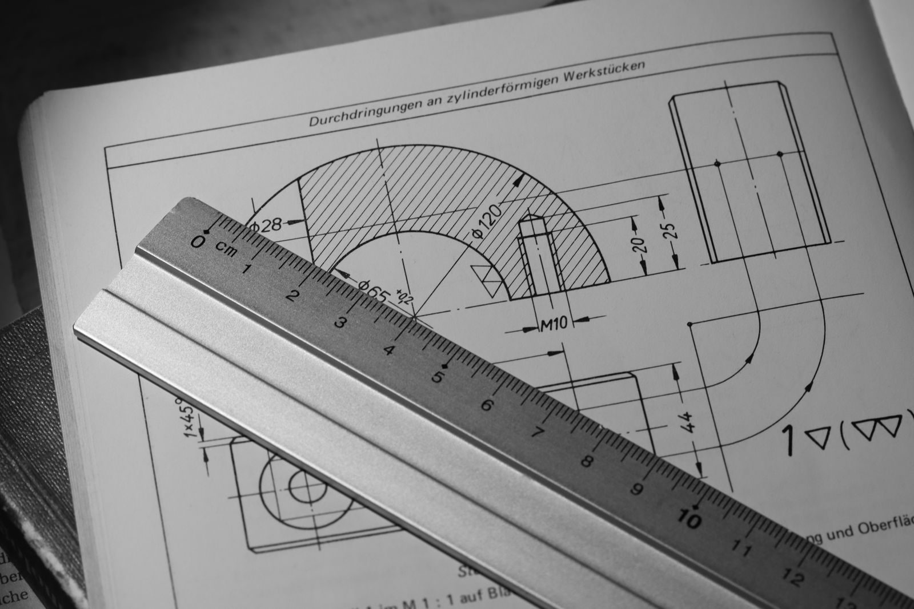

CNC Machined Shower Hardware: The Tolerance Stack That Keeps the Door Sealed
A shower door that leaks is a shower door that was not specified to the tolerance stack that keeps it sealed. The tolerance stack is not a single figure - it is the sum of the glass thickness, the seal compression, the hinge clearance, and the door's swing. The leak is the failure of the stack, not the failure of the machine.
What the tolerance stack actually governs
The tolerance stack governs the door's seal. The glass thickness has to match the seal's compression; the hinge clearance has to match the door's swing; and the door's swing has to match the frame's opening. A stack that is specified to a tolerance that the glass cannot hold will fail at the seal; a stack that is specified to a tolerance that the hinge cannot hold will fail at the swing.
It helps to think of the stack as a chain of five small allowances rather than one specification. A frameless enclosure is assembled from stock components - a tempered pane, hinges, a handle and a seal profile - none of which were made for each other. The pane has a measured thickness that sits near its nominal size; the hinge has a machined glass slot with its own tolerance; the seal extrusion has a clamping range; and the wall behind it has a plumb and square condition nobody measured until water appeared on the floor. The stack is the arithmetic of those allowances, and the seal holds only while the total stays inside the range the hardware was designed for - which is why a shower door is a precision assembly problem, not a plumbing problem.
The standards the stack has to meet
The standard for a shower hardware tolerance stack is the ISO 2768 general tolerances for machined parts, the manufacturer's own seal compression test, and the door's swing test. A stack that is built to ISO 2768 will hold the tolerance for the machining process; a stack that is not will fail the seal at the compression test, and the failure will show up as a leak in the shower after a year of use.
ISO 2768 matters because it separates "the drawing said 10 mm" from "the part is acceptable". It defines tolerance classes - fine, medium and coarse - for linear and angular dimensions, letting a drawing carry a general tolerance block instead of a tolerance on every feature. For a machined fitting in the 6 to 30 mm range, a medium-class linear tolerance is on the order of tenths of a millimetre; the fine class is roughly half that. Features that locate against glass or against each other - hinge slots, clamp bases, handle hubs - belong in the fine class; envelope dimensions can stay medium.
The wider quality frame is ISO 9001, plus the product-specific reports a manufacturer can produce for this hardware class: hinge cycle testing that counts open-close operations, and salt-spray testing that accelerates corrosion of the finish.
For reference, see ISO 2768.
The five numbers that make up the stack
When a frameless enclosure is specified properly, five numbers decide whether the seal holds. None can be fixed after the glass is cut.
| Stack element | What sets it | What it controls | How it fails |
|---|---|---|---|
| Measured glass thickness | Tempered pane, measured with coating or interlayer included - not the nominal order size | Clamp grip range and seal compression on the door edge | Undersized seal splits or creeps off; oversized seal spins on the edge |
| Closing angle | The angle between the door and the panel or wall it closes against - typically 180° inline or 135° corner | Which seal profile can be fitted at all | A 180° seal forced into a 135° corner gaps or takes permanent stress |
| Hinge position and clearance | Drilled hole locations on panel and wall, plus the hinge's own machining tolerance | Door swing, self-closing behaviour, edge clearance at the seal | Door binds, drifts open, or rubs the seal unevenly along its height |
| Opening condition | Plumb and square of the tiled opening - walls are rarely as plumb as the drawing assumes | Whether the gap the seal has to close is uniform | Seal contacts on one edge and gaps on the other; water tracks out |
| Material and finish grade | Alloy choice (304 or 316 stainless, brass) and the plating or mechanical finish | Corrosion life at every wetted contact point | Tea-staining, pitting or plate lift that destroys the clamp's grip |
The practical discipline is to write these five numbers down - on the enclosure drawing or the hardware order - instead of assuming the installer will absorb them. A seal supplier that asks for the measured glass thickness and the closing angle before quoting is doing the engineering; one that ships "the strip for 10 mm glass" without asking is gambling on your site.
Where the hardware meets the door
The hardware is not installed in isolation. It is installed in a door that has a glass, a seal, a hinge, and a frame. The glass has to be the right thickness to hold the seal; the seal has to be the right compression to hold the glass; and the hinge has to be the right clearance to hold the door's swing. The hardware manufacturer will publish the tolerance stack for the door it is built for, and the installer has to match it to the door.
Manufacturers who run the full chain in-house can publish that stack honestly, because the hinge, the clamp and the seal come out of the same controlled process. Zimmor's frameless shower hardware manufacturing is built around this model - CNC machining, its own electroplating line, and matched accessory ranges - so the glass slot in the hinge and the clamping range of the seal are specified as a system rather than as unrelated catalogue items.
The installation side is just as unforgiving. The hinge sets the clearance on the hinged edge; the same seal profile behaves differently on the latch edge, where the closing action compresses it. That is why the two edges are checked separately, and why the seal is dry-fitted before it is trimmed to length. A seal cut a millimetre short shrinks back from the edge over time; one cut with a ragged blade is where water tracks out.
How the stack is verified before shipment
A tolerance stack that is not verified is a hope. Verification on shower hardware runs at three levels: the material, the machined part, and the assembled function.
At the material level, the grade claim - 304 versus 316 stainless, or brass - should be backed by an independent material test report, and the finish by a plating thickness figure and a salt-spray result. At the part level, a first-article inspection with dimensional reporting proves the machined features - glass slots, hole positions, clamp gaps - against the drawing before the run continues. At the function level, the hinge cycle test records behaviour over repeated open-close cycles, which is what predicts whether the door still swings true after a year of use.

For a buyer, the request list is short: the material report, the first-article dimensional report, the cycle test and the salt-spray report. Suppliers who machine and plate in-house can produce all four against your actual order; suppliers who trade finished stock usually cannot. That question alone filters the market faster than any catalogue comparison.
Choosing the right hardware
The right hardware is the one that matches the door's glass thickness, the seal compression, and the hinge clearance. A hardware that is specified for a glass thickness that the door cannot sustain will fail at the seal; a hardware that is specified for a hinge clearance that the door does not have will fail at the swing. The hardware manufacturer will publish the tolerance stack for the door it is built for.
Seal selection is where the stack becomes concrete, because the seal range is organised around exactly the variables that make up the stack: closing angle, glass thickness, position on the door and material. The published range from a hardware manufacturer such as Zimmor's shower accessories catalogue maps those variables directly onto part numbers:
| Item | Material | Position and angle | Selection notes |
|---|---|---|---|
| Clear PVC seal (Z-5703) | PVC | Glass to glass, 135° | Clear PVC listed for 10 mm glass; the soft, cost-effective option for corner returns |
| High-clear PC seal (Z-5706) | Polycarbonate | Glass to glass, 180° | Four thicknesses (6/8/10/12 mm); standard length 2.4 m, orderable 1-2.4 m; stiffer and clearer for heavy doors |
| PC seal with bulb attachment (Z-5708) | Polycarbonate | Glass to floor | U-style body with a bulb that absorbs an uneven threshold - the answer to a slightly sloped floor |
| PVC seal with magnetic stripe (Z-5711) | PVC | Glass to glass, 180° | Magnetic stripe on both sides so the faces meet and hold; belongs on the closing edge of a swing door |
| High-clear PC H jamb (Z-P380HJ family) | Polycarbonate | Glass to wall or return panel, 180° | Catalogue sizes per glass thickness (6/8/10/12 mm); receives the door edge against the wall |
The material logic is simple. PVC is softer, more forgiving and cheaper, and closes gently on light doors. Polycarbonate is stiffer, optically clearer and more dimensionally stable - it matters on a heavy 10 mm or 12 mm door where the seal must resist being crushed out of position, and it holds its clarity against the yellowing clear PVC can develop over years of warm water and bathroom chemicals.
Common mistakes that break the stack
Most seal complaints trace back to five recurring specification errors.
First, ordering against the nominal glass size instead of the measured thickness: a seal will not stretch to the next size up - an undersized seal splits during installation or creeps off in service, an oversized one spins and never sits square. Second, confusing the closing angles: a 135° corner return and a 180° inline panel need different profiles, and fitting the wrong one either leaves a gap or stresses the extrusion permanently. Third, treating the seal as an afterthought: seals are light but bulky, and consolidating them into the same shipment as the hinges and clamps is where the freight saving on a seal line actually comes from.

Fourth, ignoring the site condition. Walls are rarely plumb, and a seal specified for a perfectly square opening will contact on one edge and gap on the other; dry-fitting before trimming, checking the hinge side and the latch side separately, and cutting square with a sharp blade prevent most post-installation complaints. Fifth - and most expensive - treating the hardware grade as a styling decision: a fitting in the wrong alloy fails at the contact points long before the seal does, and no seal quality compensates for a clamp that has lost its grip to corrosion. A specification guide from a manufacturer that runs the whole chain in-house, such as Zimmor's guide to specifying PVC, PC, magnetic and jamb shower door seals, shows how these variables are pinned down before an order is placed.
Conclusion
A shower door that stays sealed is a door whose tolerance stack was specified, not discovered. Measure the actual glass rather than trusting the nominal order, fix the closing angle before anyone talks about material, match the seal profile and alloy to the door weight and the environment, and require the reports - material, first article, cycle test, salt spray - that prove the hardware was made under control. The leak is the failure of the stack - and the stack is entirely within the buyer's control.
Frequently asked
What is the minimum seal compression a shower door has to hold?
There is no universal figure - the compression is set by the hardware manufacturer for the profile and door it is built for, and it is verified through the manufacturer's seal compression and swing tests. What a buyer controls is the input side: the measured glass thickness, the closing angle and the door weight, because those three decide which profile will compress correctly.
How do I know which hardware for my door?
Match the glass thickness, the seal compression and the hinge clearance. Start by measuring the pane - including any coating or interlayer - and the closing angle between the door and the panel or wall it meets. Those two numbers shortlist the profile family; the door weight then decides between the softer PVC option and the stiffer, high-clear polycarbonate option.
What standard does the hardware's tolerance stack have to meet?
ISO 2768 for the general tolerances on the machined parts, the manufacturer's seal compression test, and the door's swing test. Beyond the dimensional standard, ask for the quality-system evidence: ISO 9001 for the factory, an independent material test report for the grade claim, and product-specific reports such as a shower-hinge cycle test and a salt-spray test for the finish.
Can I reuse an existing seal profile on a different glass thickness?
Only within the profile's published size range. Seal families are catalogued per glass thickness - 6, 8, 10 and 12 mm steps - and the part number changes with the size, because the clamping geometry is sized to the pane. A seal will not stretch to the next size up: an undersized seal on thicker glass splits during installation, and an oversized one spins on the edge and never sits square.
Why do 135° and 180° seals keep getting mixed up?
Because both are glass-to-glass profiles and look similar in a catalogue photo. A door closing onto an inline return panel runs at 180°; a door closing into a corner return typically runs at 135°. Fitting a 180° seal into a 135° corner either leaves a gap or stresses the extrusion permanently, which is how a seal starts to lift after a few months. Measure the angle with the door shut, before ordering.